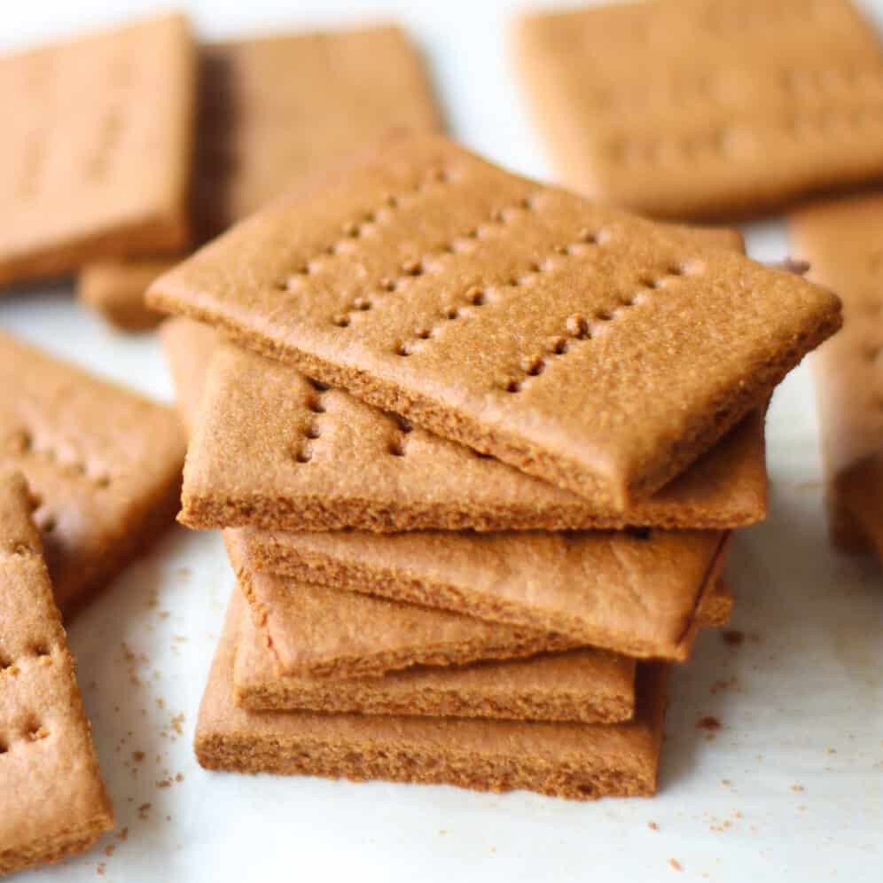

Home
Graham Cracker Recipe

Description
Make your own honey graham crackers at home! These are simple to make, and can be used in recipes that call for graham crackers.
Ingredients
- 2 cups whole wheat flour
- 1 cup unbleached all-purpose flour
- 1 teaspoon baking powder
- ½ teaspoon baking soda
- ½ cup margarine, softened
- ½ cup packed brown sugar
- ⅓ cup honey
- 1 teaspoon vanilla extract
- ½ cup milk
Steps
- Sift together the whole wheat flour, all-purpose flour, baking powder and baking soda; set aside.
- In a medium bowl, cream together the margarine, brown sugar and honey until light and fluffy. Stir in the sifted ingredients alternating with the milk and vanilla. Cover dough and refrigerate overnight.
- Preheat the oven to 350 degrees F (175 degrees C). Divide the chilled dough into quarters. On a well floured surface, roll the dough out one quarter at a time into a 5x15 inch rectangle. Divide into rectangles using a knife. Place rectangles into ungreased cookie sheets. Mark a line down the center of each one, and prick with a fork. For a cinnamon flavored cracker, sprinkle with a cinnamon sugar mixture before baking.
- Bake for 13 to 15 minutes in the preheated oven. Remove from baking sheets to cool on wire racks.